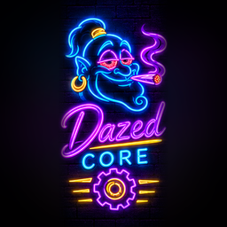
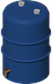
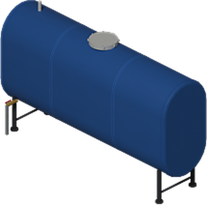

You never open Dazed Core, but you feel it in every Dazed mod. It is the shared library the whole suite loads first, and these are the parts of it you will meet in game.
Heavy Parts
Big things come apart for the trip home, like a vanilla bed.

Small water tank
Workshop Tracking Array

Extra-large water tank
The limit
anything heavier is split
Carry the parts
each one a fair load
Place it
with every part on you
Pick it up
and it comes apart again
Works for 2x2 furniture from the Dazed mods as well.
Building Picker
Put whole houses on your power or water.
served
a click adds it
a click removes it
out of reach
Opened from
Power transformer
carries your batteries across town to the houses you pick

Power controller
lights and appliances in nearby houses run off the bank

Plumbing water main
every tap and toilet runs from a tank
Map houses with basements, or structures you built yourself. The server agrees with what you clicked.
One Difficulty Preset
Set the whole suite from one sandbox page.
What it moves
Output and capacity, battery size, ageing, lightning storms, cable cost, link reach and the water main, all in step.
Who follows it
Custom leaves each mod's own options alone.
Options & Temperatures
Every Dazed tick box in one place.
Temperatures your way
One choice that Dank, Climate, the electric vehicles and the thermometer all follow.
Mod Suite Guide
An in-game book with a tab for each Dazed mod you run.

Sidebar button
At the foot of the left sidebar. Hide it in the options if you like.
Wiring buildings
A transformer or a water main can serve whole buildings. Choose them with the Building Picker: green is served, yellow adds on a click, blue removes on a click, red is out of reach.
A tab shows only while its mod is switched on.
Quiet Helpers
The bits you only notice when they are missing.
Server sync
The server decides and clients stay in step. A note above your head says why something was refused.
Plays nice
A Dazed feature steps aside when another mod you run already does the same job.
Debug spawn
In debug mode or for server staff, one menu spawns a mod's whole item set.
The Dazed Suite
Nine mods, one Core underneath.

Power
Solar, wind, steam and gas feeding battery banks
Power: Electric Vehicles
Homemade 1993 EVs you build and charge
Plumbing
Tanks, pipes, pumps, wells and a water main
Dank
Realistic cannabis growing, seed to smoke


Dank: Garden Crops
Vanilla crops in Dank's grow bags and hydro

Butchery
Pick a primal and trace every cut yourself


Cooking
A best method and doneness for every cut

Climate
Real winters, frost on crops and frozen pipes
Essentials
Common-sense quality of life, each a switch
Loads first
Every Dazed mod lists it as required and loads after it.
Safe mid-save
Add it to an existing game. Removing it breaks the mods that need it.
1 sandbox option
The difficulty preset, plus one options page for the suite.